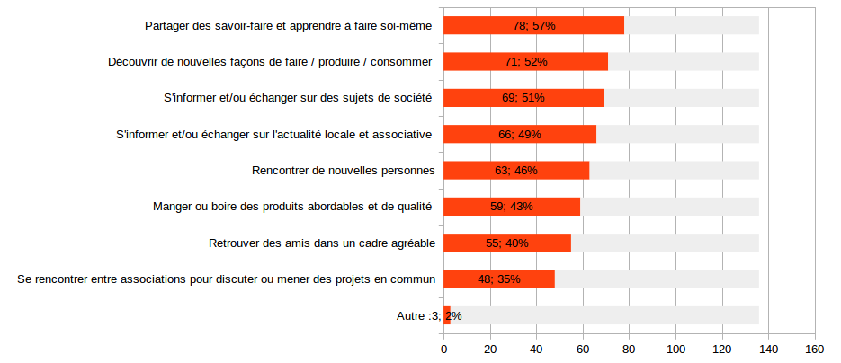
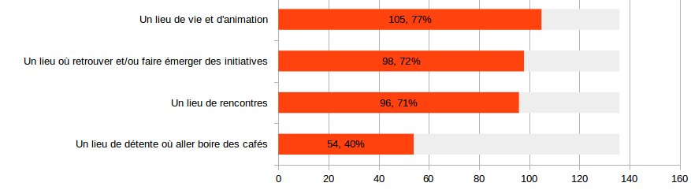
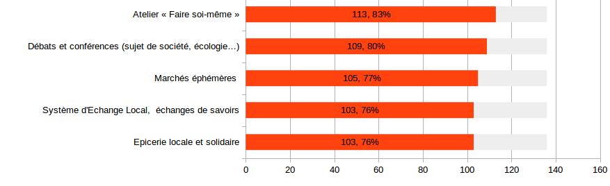
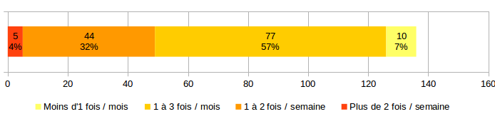
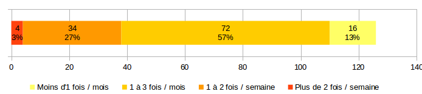
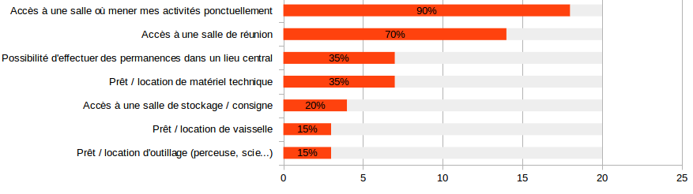
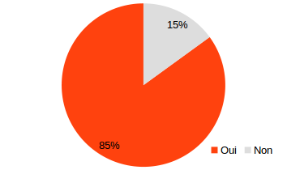

Un café associatif à Epinal
Pourquoi un café associatif ?
Un lieu de rencontre et de convivialité pour échanger agir, faire soi-même
Diriez vous qu'il manque à Epinal un lieu pour :

Extrait du sondage - mars 2017
Que vous évoque l'idée d'un café associatif ?

Extrait du sondage - mars 2017
Les objectifs du café
- Donner à chacun-e un endroit où il-elle peut s'exprimer, créer, partager, transmettre
- Faire connaître et relier les initiatives citoyennes, solidaires et durables
- Animer le centre-ville d'Epinal par une initiative conviviale
L'activité café
- Etablissement en licence 3
- Petite restauration
- Produits locaux, responsables, en circuits-court
- Tarification accessible
La programmation
- Activités pour apprendre et/ou transmettre
- Consommation collaborative
- Après-midi ou soirée festives
- Evènements
- Services
- Mise à disposition / mutualisation d'espace
et de matériel
Les activités plébiscitées :

Extrait du sondage - mars 2017
Les usagers du café
Les habitants
Les habitants consommateurs
A quelle fréquence fréquenteriez-vous le café pour y manger ou boire ?

A quelle fréquence fréquenteriez-vous le café pour une activité ou un événement ?

Extrait du sondage - mars 2017
Les usagers du café
Les associations
Des associations bénéficiaires et partenaires
- Une vingtaine d'associations se sont manifestées
- Intéressées par les services proposés par le café
- Mais aussi pour y mener des activités
J'aimerais que le café propose aux associations:

Extrait du sondage - mars 2017
J'aimerais y proposer des activités, des évènements, des services :

Extrait du sondage - mars 2017
Nos besoins immobiliers
- Un local de 150 m² environ
- En centre-ville d'Epinal
- Pouvant accueillir une activité café / petite restauration
- Autant que possible avec plusieurs espaces
Nos besoins financiers
- Apports extérieurs nécessaires pour lancer le projet
- Autonomie financière à moyen terme
Quelques retours
Merci pour cette belle initiative... et bon courage !
Très belle initiative, c'est ce qui manquait à Epinal !
Belle initiative, bravo !
Bravo pour le travail déjà accompli !
Quelle belle idée ! J'ai hâte...
Super projet !!! J'ai hâte qu'il ouvre, merci de nous offrir ce lieu qui promet d'être très riche !
Extrait du sondage - mars 2017